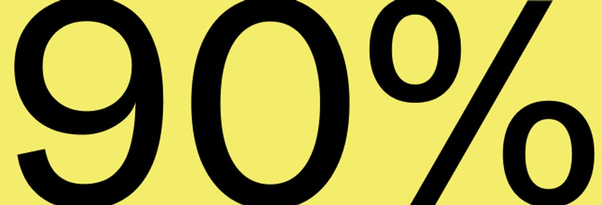
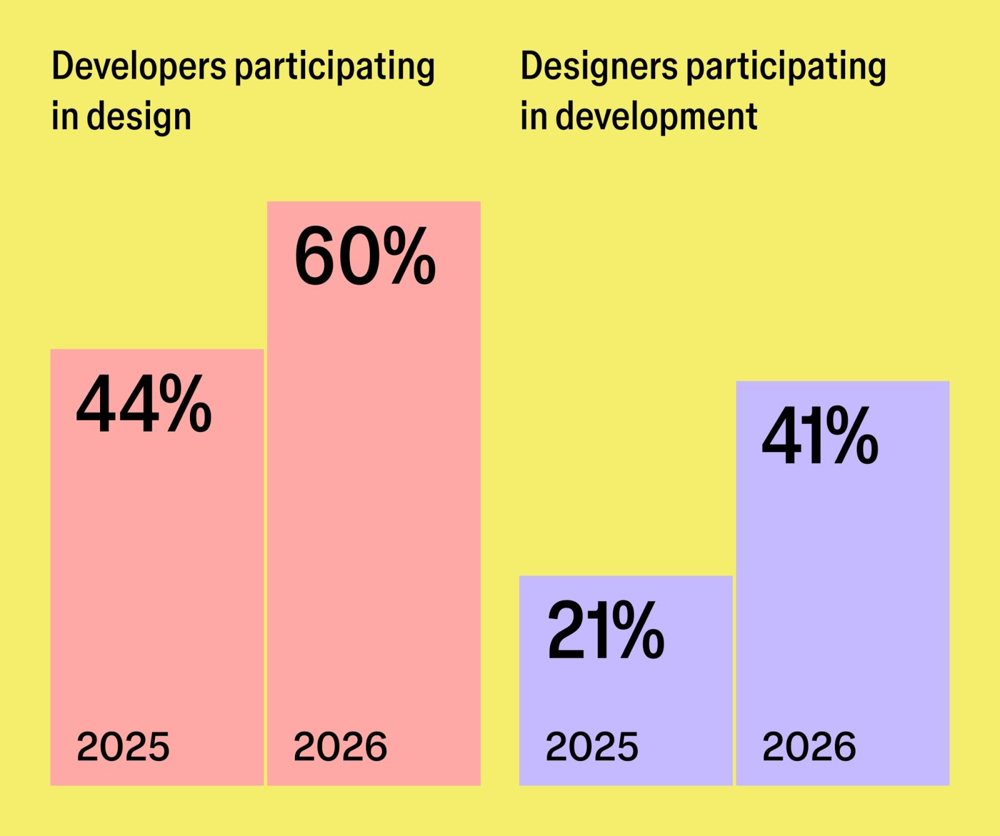
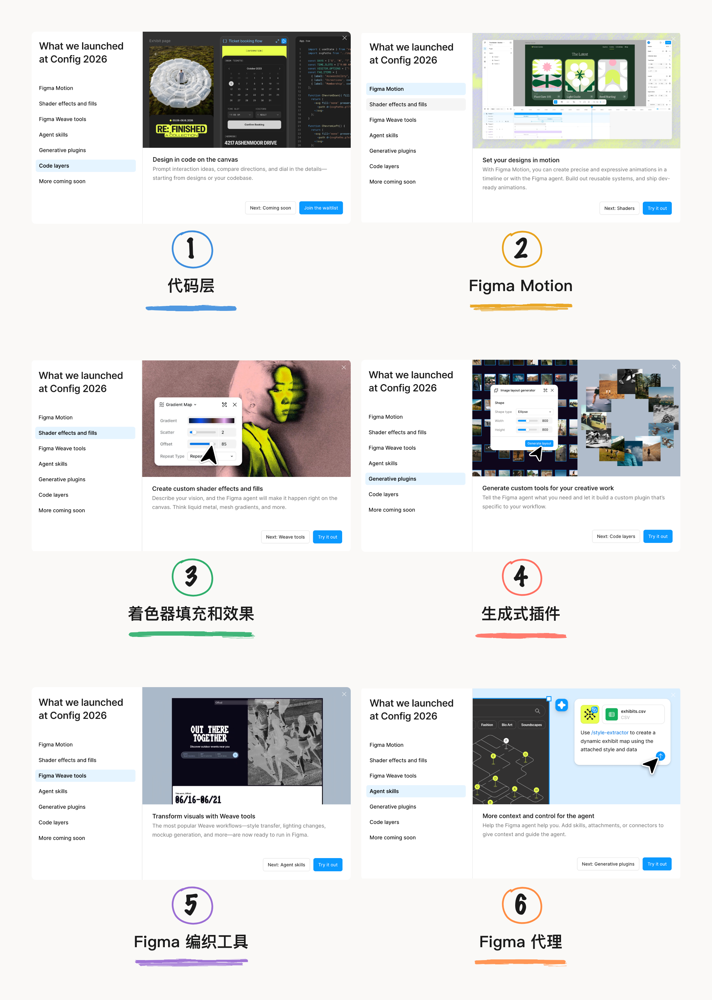
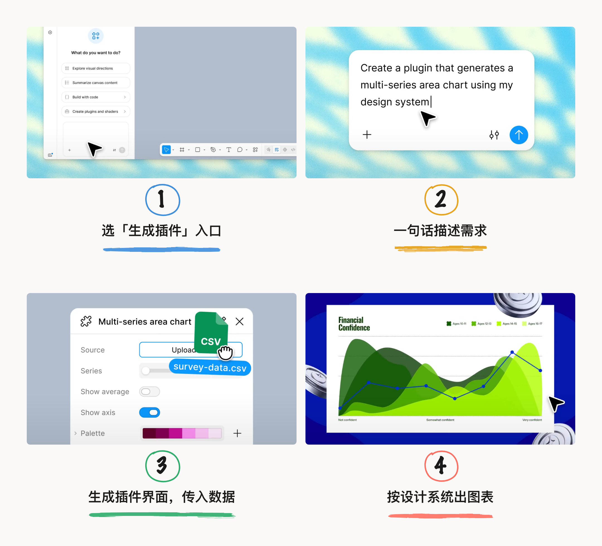
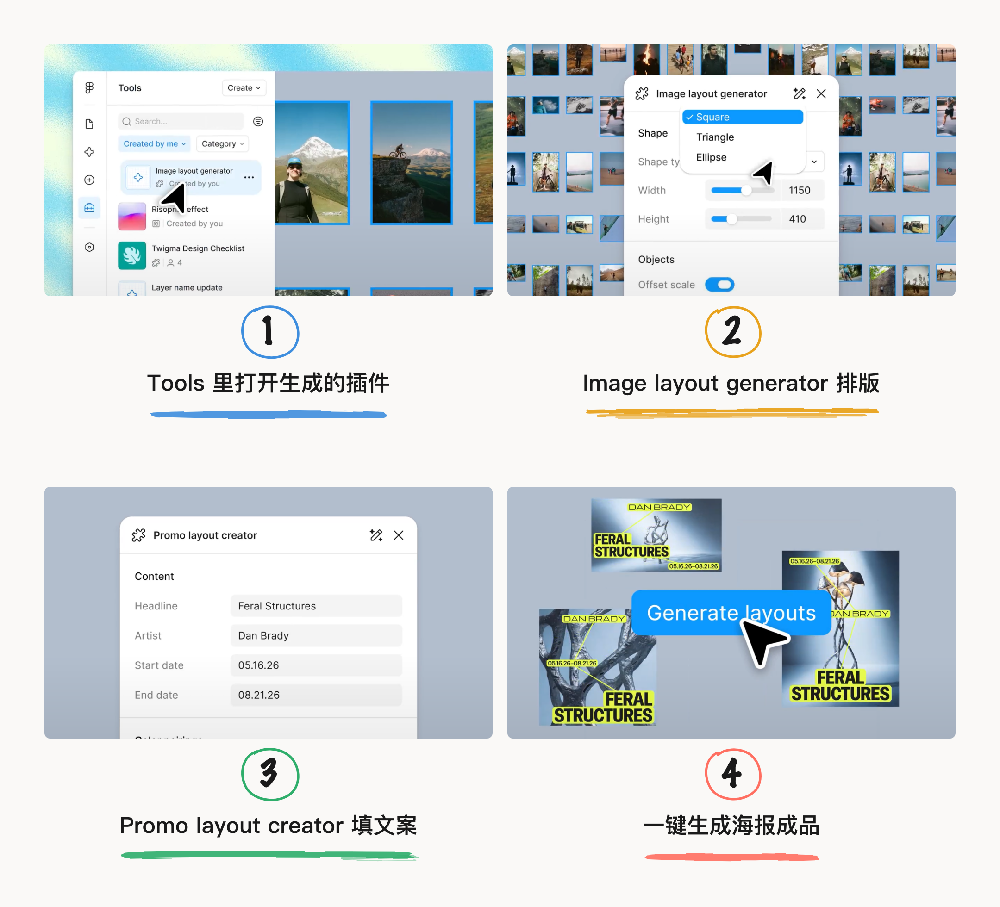
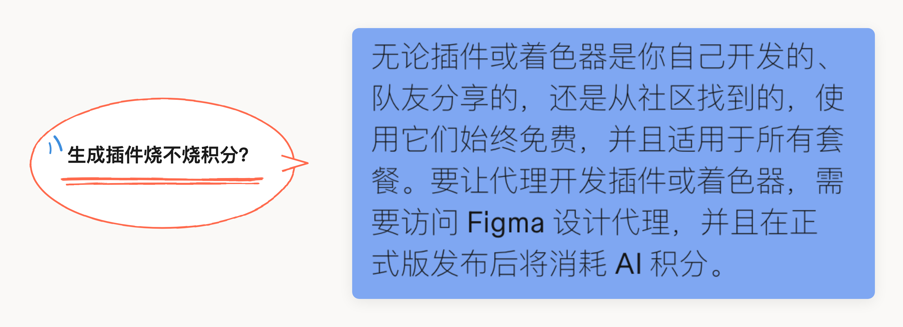
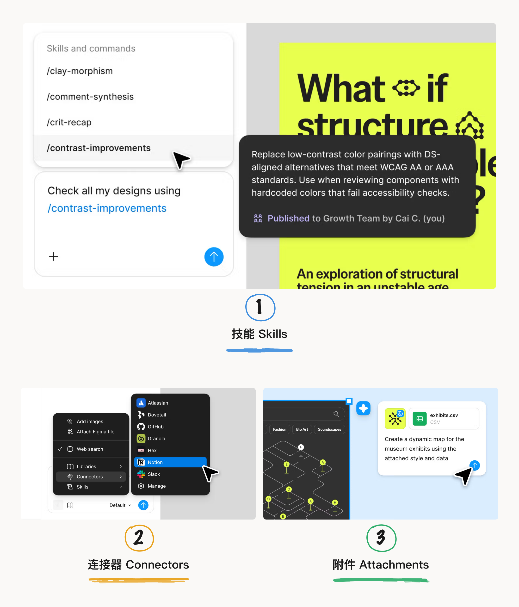
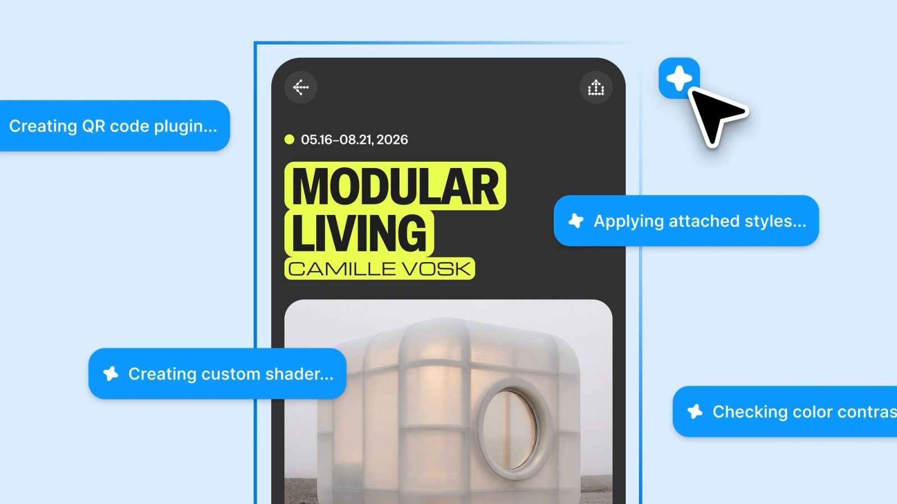
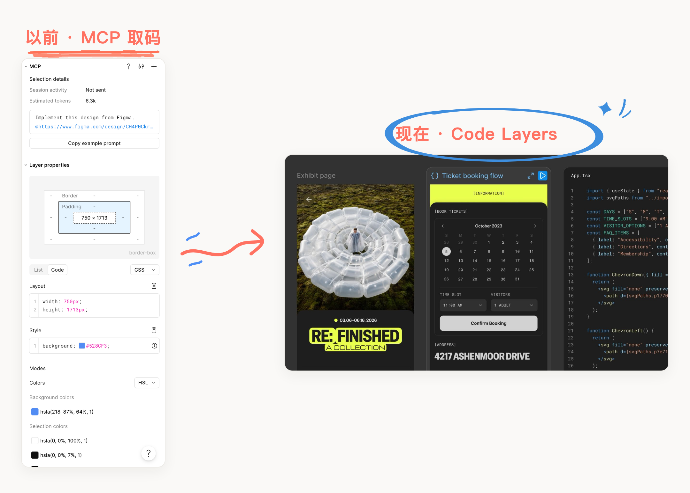
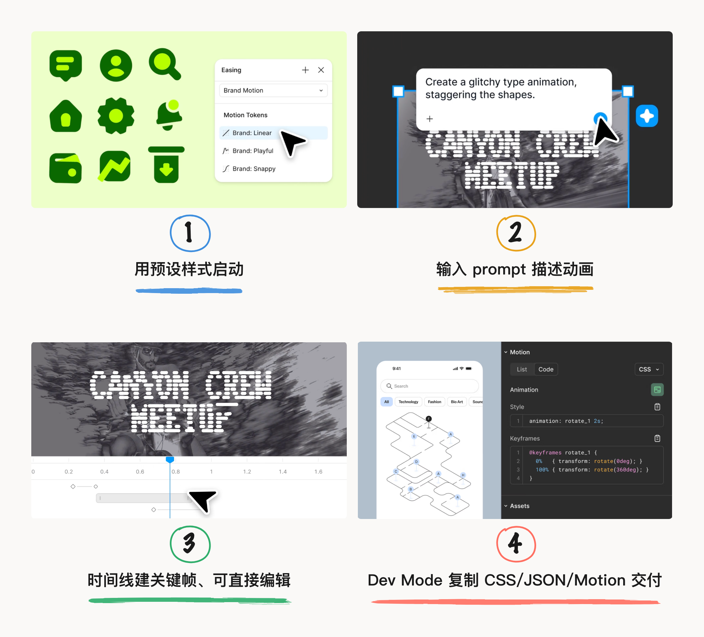

当 AI 几秒就能生成一个能跑的产品设计、随之而来的是铺天盖地的“设计师要被取代了”“Design is dead”的言论，难道在 AI 时代设计价值真的在缩水了？Figma 不这么认为，反而加码 AI 设计工具，在 Config 2026 发布的六项新功能（代码图层、Figma Motion、着色器、生成式插件和 Weave 工具），更加放大了设计表达能力。
看完这次发布会，感觉 Figma 在垂类场景下的这些 AI 能力和设计工作融合得很妙。正是我想要的 Figma AI。
作为设计师，在我大量使用过 CLI（Ghostty）、IDE（cursor、codex）—— 这种单线程工具之后，更加确信画布才是最接近于设计与创造的一个环境。我也经历过用 Claude Code 直接生成设计，一直比较难受的点是得在在浏览器里面打开看效果，无法很直观地感受到一些不同方案之间的差别，因为它是以时间版本为迭代管理；而每次想要改动设计的时候，就会想着：“哦，会不会浪费token”。
如果说 60分 的设计将被淘汰，那么在 60 分设计师即将被 AI 替代之前，设计师的自我迭代成长的机会这不就来了嘛。
•设计比以往更重要，不只是设计师的自我打气。Figma 研究团队攒了三年的报告《Figma's 2026 AI report: Can AI help us collaborate better?》也用数据接住了这句话：8403 份问卷里，近六成的人说设计变得更重要了，连开发者里都有 65% 这么觉得。这份研究横跨了三年，从非 AI 时代跨越到 AI 时代，在 8403 份问卷加 639 场深度访谈，市场从 7 个扩到 10 个（新加了巴西、印度、韩国），研究的设计师、开发者、产品经理也是同一批人，获得的真实结论是：90% 的人认为设计的重要性不比 AI 出现之前低，接近 60% 的人认为变得更重要。

不只是设计师，65%的开发者也表示相同看法。一个受访的软件工程师说得直白：「设计、品味和用户体验比以前更重要，所以我们每天都在改进它。」
当 AI 能给任何人带来十倍提速，个人的十倍就没意义了，竞争重新落到集体速度上——一个团队整体能多快地做出好设计的判断。
设计工作最有价值的地方之一是设计判断，而判断不是 AI 所擅长的（可能大概不是现在）。这时候，设计师的成熟经验、设计敏感，都是无法被轻易替代的优势。
画布是 AI 时代协作的
最佳场域
两年前，只有 7% 的人觉得 AI 改变了团队协作方式；现在这个数字是 41%。也就是说 AI 带来的冲击，已经从「让一个人干得更快」变成了「让团队怎么一起更流畅」。
角色的边界也在化开。参与开发的设计师从 21% 涨到 41%，翻了一倍；参与设计的开发者从 44% 涨到 60%。更有意思的是，五分之一的开发者现在更愿意在画布上起一个新项目，而不是在终端或者对话框里敲 prompt。

这就引出报告反复在强调的一个词——画布（canvas）。76% 的产品团队，至少有一半的工作发生在协作画布上；六成人大部分时间都在画布上工作。终端和聊天框的环境是单人的，一次只服务一个人的思路；画布是可以多人协作的，能让讨论、反馈、并行修改发生在同一个空间里。
个人与环境都在快速迭代。报告中还提到企业采用 AI 的方式可以分为四类：步调一致的「统一型」占 36%，自上而下推的「指令型」占 27%，基层自己长出来的「草根型」占 20%，刚起步的「萌芽型」占 18%。报告指出一个行动指南：一个基层变革者，要推广行之有效的方法——使工作流程可见，围绕它们建立结构，并成为共享空间的倡导者。领导层面推动 AI，要努力弥合战略与实践之间的差距。未来是个人和组织共同推动 AI 画布的采用。
Config 2026 的 6 项新功能
4 项以 AI 为核心
带着上面这套数据背景再去看 Config 2026，每个新功能都在往「画布」和「协作」上发力。推出这些设计生成工具，都具备了 AI 协作能力。在 Figma 这个生态里面，这些 AI 生成的工具就不是独立的，而是可以无限使用、协作使用，相比于在 IDE 、CLI vibe coding 的工具，这在 Figma 里降低了技术门槛。

Generative Plugins
不碰开发环境
就能生成趁手工具
针对的是「每个团队或设计师都有自己古怪的工作流」，可以在画布里生成个性化定制的、仅满足团队内部或者是个人需求的原生的 Figma 工具，并且是在Figma生态里面，就可以没有限制地分享给任何人，还能发布到团队。
发布会介绍了生成一个表单可视化的插件：在 AI chat 对话，Agent 就把一个带界面的原生插件搭出来，把客户给的数据拖进去，就能生成可视化表单。用起来就是一条很短的链路。

同样的方式还能生成排版类工具：发布会还演示了一个 Image layout generator，把素材按形状、尺寸排成版，再配一个 Promo layout creator 填上标题和日期，一键就生成出一组海报成品。

这套可以直接生成插件 workflow 天然就有超低门槛的优势。相比于 Claude Code、cursor 这种 AI Coding 生成的工具，给他人使用，还要上传到 GitHub 、部署到线上环境。在Figma生态里就更便于协作使用。作为设计师的我平时用 vibe Coding 给自己弄了一些 shader 设计小工具，也不愿意部署到 GitHub 或线上，虽然可以让 AI 操作，只是觉得要维护这一套流程，感觉很麻烦，想的是能省则省。那么这个功能确实为设计探索和协作节省了一些工作成本，但算力消耗可能是另一个成本。
Figma 官方也明确了 AI 积分机制：现在 Beta 版构建生成式插件不消耗 AI 积分，运行插件也不消耗；等 Figma Agent 全量开放后，用 Agent 来构建插件会按标准 AI 积分规则计费。也就是说，花钱的是「让 Agent 生成工具」这一步，后面「使用生成的的工具」本身是免费跑的。

Figma Agent
把 AI coding 的工作流
搬进画布
另一块重头是 Figma Agent 的升级。这次增加了3个功能。技能（Skills）：创建并分享自定义技能，将可重复的工作流程转化为一键式调用的命令。连接器（Connectors）：能接 Notion、GitHub 这些外部工具，设计完成可以直接推到这个外部工具，比如推到 GitHub。附件（Attachments）：可以将用户访谈记录、用户体验文案或数据报告等文件拖放到 Agent 聊天窗口中，喂给它当作上下文。

当设计工具千篇一律时，在 AI 时代，设计师已经开始 vibe coding 做一些自己需要的工具。而 Figma 这一套就是把平时在 AI Coding agent 里面的工作流直接可以搬入到 Figma 里面。虽然设计师已经习惯在无数个软件来回倒腾了，对于设计师就可以省去使用两个软件的成本。

有个设计上的小策略是——与 Agent 的对话默认是团队成员可见的，要私聊才需要单独切私密模式。这个默认团队可见的模式正好对应报告那个结论上：AI 协作的难点往往出在「一个人摸索出的好用法，别人不知道」。把 Agent 对话默认公开，成员可以在上面学习与迭代，有 GitHub 那味了。
Code Layers
设计即代码
降低解释成本
Dylan Field 抛出了一句定调的话：「设计是一个过程。代码是材料，就像图像、矢量和设计图层一样。」意思就是设计和代码都属于最终产品化之前的养料，可以画等号。
落到 Figma 上就是 Code Layers（代码图层）。内核是「代码 ↔ 设计」双向互转、可以接 Dev Mode / MCP使用，没有 AI 也能用代码图层，能导出 CSS、JSON 或者框架级的 React 代码。

这个比 Dev mode 和 MCP 更往前了一步，之前只能 MCP 到 AI Agent 去使用，离不来 AI 能力。现在代码和设计是在同一环境、同一环节的平级产物了，代码就不是设计交付之后的下游环节，甚至代码还可以反向修改设计。
Figma Motion
动画不再是收尾步骤
与设计、开发并列

跟 Figma Motion 协作不止一条路，四种方式各管一段、挑趁手的用。最快是从预设动效起手——Brand: Linear / Playful / Snappy 这类 Motion token 一点就套上；最省事是直接对 Agent 说一句话（比如「做个故障风的文字动画、让形状错开出现」），它就在时间线上把关键帧铺出来；想精修就自己在时间线上拖关键帧、改缓动曲线；做完切到 Dev Mode，整条时序轴变成可检视的代码，CSS、JSON 或 Motion.dev 文件拷了就能交付。
新发布的 Figma Motion 也适用这个切换代码。切换到开发模式时，完整的时序轴会显示并可检查：每个时间值、每条缓动曲线、每个关键帧都可以直接读取。可以直接在 CSS、JSON 、 React 中复制使用动画代码，也兼容 MCP，也可以导出为 MP4、WebM、动画 SVG 或 GIF。还支持一些 3D 的这些效果，其实也挺全面的。Agent 还能辅助 Motion 设计，这个就解决了平时用 AE 来回切换的跨工具的繁琐，遇到一些简约动效的时候，就可以在Figma里面完成了。
做得好的动态效果是设计中最具表现力的元素之一。它影响着用户如何理解层级结构，以及他们如何感受交互背后的意图。这么重要的创意决策应该从一开始就进行规划和完善。
动画不再是收尾步骤。如今，动态设计与其他所有环节一样，贯穿整个设计流程：从第一帧到最终成品，所有环节都在同一个地方完成。
Figma 只是工具加持
设计的上限依旧是创意
在设计领域，Figma 总是领袖、引领未来设计工作，对标 Figma 的设计软件很多，但都在宣扬如何用这些软件生成 AI 设计、如何快、如何数量多。AI 确实把下限降下来了，但没能把上限抬上去。而 Figma AI 能满足设计未来的想象，能感觉上限只会越来越高。
不过，这些 AI 功能大部分还在 Beta 阶段，在 AI 时代居然还在有测试阶段这个环节。像 Anthropic 发布之后，即发即用。这或许是 AI native 产品与 传统互联网产品加入 AI 能力的迭代差距吧。
本文素材来自 Figma 官方博客 Config 2026 recap 与 2026 AI Report